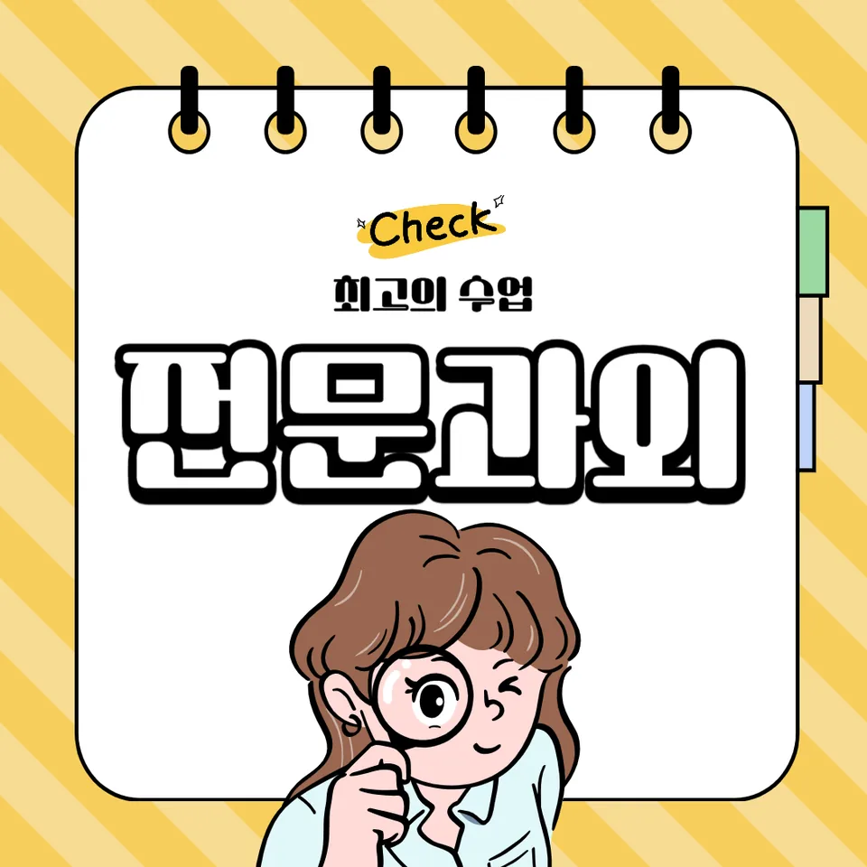

PageType : SUBJECT
URL : /경기도과외/광명시과외/철산동과외/철산동수학과외/
지역 교육환경이 수학 학습에 미치는 영향
철산동수학과외를 고민하는 학생들은 보통 “수업은 듣는데 왜 점수가 들쭉날쭉한지”를 먼저 마주합니다. 학교에서는 진도와 함께 개념 확인이 빠르게 진행되고, 교실 분위기는 문제 풀이 속도와 발표 태도에 영향을 받습니다. 철산동수학과외에서는 이런 환경 차이를 그대로 반영해, 수학 학습이 단순히 더 풀기보다 ‘수업에서 무엇이 핵심이었는지’를 찾아가는 과정으로 이어지게 만듭니다.
철산동 주변 학습 문화는 비교적 목표 중심으로 움직이는 편이라, 학생들은 시험일이 다가올수록 어려운 단원을 뒤로 미루는 경향을 보입니다. 철산동수학과외에서는 시험 범위가 열리는 시점을 기준으로 공부 흐름을 조정하며, 수업 후 1주 안에 개념-문제-오답 정리의 고리를 만들도록 돕습니다. 그 과정에서 학생은 ‘학교에서 배운 내용이 내 공부의 출발점’이라는 감각을 갖게 됩니다.
지역에 따라 학부모가 체감하는 공부의 압력도 달라집니다. 철산동수학과외를 선택한 가정에서는 내신 준비가 급해지면서도, 수행평가나 서술형 대비가 함께 요구된다는 점을 고민합니다. 그래서 학습 계획을 세울 때 단원별 부담을 같은 비율로 나누기보다, 학생이 멈추는 지점(이해가 끊기는 순간)을 기준으로 재배치합니다.
학교별 평가 방식과 학습 방향
같은 수학이라도 학교마다 평가 방식이 다르게 굴러갑니다. 어떤 학교는 서술형과 과정 점수를 더 중시하고, 또 다른 학교는 정답률 위주의 채점으로 학습 습관이 정리됩니다. 철산동수학과외에서는 내신에서 실제로 점수로 전환되는 요소가 무엇인지부터 확인합니다. 학생이 답만 적어도 평가가 끝나는 환경인지, 풀이 과정의 문장과 근거가 필요한지에 따라 공부의 우선순위가 바뀝니다.
학생들은 종종 “문제가 어렵다”보다 “학교에서 원하는 방식으로 쓰지 못한다”에서 막힙니다. 철산동수학과외에서는 개념을 이해한 뒤, 학교 시험과 닮은 형태로 사고를 정리하게 합니다. 이때 핵심은 공식을 외우게 하는 방식이 아니라, 문제를 봤을 때 어떤 조건을 먼저 읽고 무엇을 확인하는지 행동을 바꾸는 데 있습니다.
수행평가가 포함된 학교일수록, 수학 학습은 ‘학습 기록’과 함께 움직입니다. 철산동수학과외에서는 풀이 과정을 단순 필기가 아니라, 학생이 다음에 다시 떠올릴 수 있게 만드는 언어로 정리하도록 지도합니다. 이런 정리는 시험 기간에 갑자기 시작되는 몰아공부를 줄여 주고, 공부 습관을 안정적으로 유지하게 합니다.
학생들이 수학을 어려워하는 주요 원인
많은 학생이 수학을 처음부터 어려워한다기보다, 특정 시기에 ‘이해가 누적되지 않는 순간’을 겪고 나서 어려움을 호소합니다. 철산동수학과외에서 자주 관찰되는 패턴은 계산이 막히는 시점이 아니라, 개념이 연결되지 않는 시점입니다. 문제를 풀기 위해 필요한 정의와 조건을 읽지 못하면, 정답이 아니라 사고의 방향이 흔들립니다.
또래 수업 속도 차이도 원인이 됩니다. 어떤 학생은 수업 중에 바로 이해하지만, 다른 학생은 예시 한두 개를 지나치며 핵심을 놓칩니다. 이때 복습이 없으면 ‘다시 보면 되겠지’라는 생각이 쌓여 오답이 반복됩니다. 철산동수학과외는 이런 반복을 끊기 위해, 오답이 나온 날의 분석을 늦추지 않게 합니다.
학부모가 느끼는 고민은 “왜 같은 실수를 또 하나요?”로 모입니다. 학생 입장에서는 문제를 틀린 이유가 명확하지 않아서, 다음에 비슷한 유형이 나오면 다시 같은 실수를 합니다. 철산동수학과외에서는 실수를 습관처럼 굳히기 전에, 오답의 원인을 ‘개념 누락-조건 해석-계산 습관-풀이 흐름’으로 분류해 사고를 교정합니다.
학년 변화에 따른 수학 학습의 차이
학년이 올라갈수록 수학은 더 어려워지는 것보다 더 ‘정교해지는 방식’으로 변화합니다. 중간 단계에서는 문제 풀이가 비교적 분명해도, 상위 학년에서는 조건을 조합하고 선택하는 과정이 늘어납니다. 철산동수학과외에서는 학년 변화에 맞춰 학습 부담의 형태를 점검합니다. 단원이 늘어나는 것보다, 같은 단원을 공부하더라도 요구되는 사고 수준이 달라지는 흐름을 다룹니다.
학생들은 학기 초에는 의욕이 유지되지만, 중반부터는 시험 일정과 과목 간 경쟁으로 공부 시간이 줄어듭니다. 이때 계획이 무너지면 개념 확인이 빠지고, 문제를 풀면서 ‘감’으로 넘기려는 경향이 생깁니다. 철산동수학과외는 시험 기간 학습 패턴이 바뀌는 시점을 예측해, 학습 계획을 유연하게 조정하도록 돕습니다.
또한 상위 학년으로 갈수록 자기주도학습의 자리가 커집니다. 질문을 어디까지 스스로 정리할 수 있는지가 성적의 결과로 연결됩니다. 철산동수학과외에서는 “무엇이 막혔는지”를 학생이 문장으로 설명하도록 훈련하며, 그 문장이 복습과 오답 분석의 재료가 되게 합니다.
꾸준한 학습이 실력으로 이어지는 과정
수학 실력은 한 번의 집중으로 생기기보다, 작은 확인을 반복하면서 형성됩니다. 철산동수학과외에서는 꾸준함을 단순 시간 증가가 아니라 ‘복습이 학습 성과로 연결되는 구조’로 설명합니다. 예를 들어 개념을 처음 본 날에는 핵심을 이해하고, 다음에는 문제 적용에서 어디가 흔들리는지 확인한 뒤, 다시 오답을 줄이는 순서로 이어지게 합니다.
학부모는 “얼마나 오래 공부했는지”를 보려 하지만, 실제로는 “무엇을 다시 봤는지”가 더 중요해집니다. 철산동수학과외는 복습의 타이밍과 방식에 초점을 둡니다. 틀린 문제를 다시 푸는 것만이 아니라, 틀린 이유를 떠올리며 동일한 사고 오류를 줄이는 방식으로 복습을 설계합니다.
이 과정이 쌓이면 학생의 자신감이 형성됩니다. 처음에는 이해가 안 되어 불안하던 학생도, 오답이 줄어드는 경험을 통해 “내가 공부하면 바뀐다”는 감각을 갖게 됩니다. 철산동수학과외는 그 감각이 지속되도록, 사고력과 문제 해결의 흐름을 끊기지 않게 관리합니다.
문제 해결력을 키우는 학습 습관
문제 해결력은 공식 암기나 풀이 속도만으로 만들어지지 않습니다. 학생이 문제를 읽고, 조건을 정리하고, 무엇을 확인해야 하는지 순서를 갖출 때 성장합니다. 철산동수학과외에서는 문제를 풀기 전 ‘관찰 단계’를 습관처럼 남기게 합니다. 어떤 정보가 주어졌는지, 어떤 질문이 요구하는지부터 정리하면 풀이의 흔들림이 줄어듭니다.
문제 해결이 막힐 때 학생은 대부분 두 가지 반응을 보입니다. 첫째는 바로 계산부터 들어가며 사고를 확인하지 못하는 경우, 둘째는 이해가 안 된 채 답만 찾으려는 경우입니다. 철산동수학과외에서는 오답이 나온 지점을 돌아보며, 문제 유형마다 반복되는 사고 패턴을 찾아 교정합니다. 이때 목표는 정답을 빨리 찾는 것이 아니라, 다음 문제에서도 같은 실수가 반복되지 않게 만드는 것입니다.
결국 사고력은 연습의 누적물입니다. 철산동수학과외에서는 “왜 이 선택이 맞는지”를 학생이 말로 정리하게 하고, 그 문장이 다음 복습 때 자동으로 되살아나게 합니다. 문제를 풀고 끝내는 공부가 아니라, 문제 풀이가 공부습관으로 바뀌는 흐름을 이어갑니다.
복습과 학습 관리가 중요한 이유
복습은 단순 재확인이 아니라, 학습 관리의 결과로 나타납니다. 수학에서 기억은 시간이 지나며 흔들리기 때문에, 복습이 늦어지면 오답 분석도 의미가 줄어듭니다. 철산동수학과외에서는 시험 전 몰아보기의 위험을 줄이기 위해, 단원별로 복습 주기를 짧게 설계합니다. 학생은 자신이 놓친 개념을 빠르게 회수하고, 오답의 반복을 줄이는 경험을 합니다.
학습 관리가 잘 되면 시험 기간에 공부 패턴도 안정적이 됩니다. 철산동수학과외에서는 시험이 가까워졌을 때 오히려 취약한 사고 흐름을 드러내도록 연습합니다. 정답률만 보고 넘어가지 않으며, 틀린 문항에서 어떤 조건 해석이 흔들렸는지 반복해서 확인합니다.
또한 자기주도학습은 계획만으로 성립하지 않습니다. 계획이 실행되려면 복습과 오답 정리가 매번 같은 방식으로 진행되어야 합니다. 철산동수학과외는 학생이 스스로 점검할 수 있는 체크 흐름을 만들고, 그 흐름이 공부습관으로 자리 잡게 합니다. 시간이 지나도 흔들리지 않는 공부 리듬이 형성되는 것이 가장 큰 변화입니다.
수학 학습에서 확인해야 할 핵심 요소
철산동수학과외에서는 다음 요소들이 실제로 학습 과정을 바꿔 주는지 점검합니다. 수업을 따라가는 것과 내신에서 성과로 연결되는 것은 다를 수 있으므로, 학생의 이해와 사고를 확인하는 기준을 분명히 잡습니다. 개념과 문제는 분리되어 있지 않으며, 오답은 단절이 아니라 보완의 신호가 됩니다.
학교와 가정에서 이어지는 학습 환경을 함께 봐야 합니다. 학교에서는 수업 방식과 평가 기준이, 가정에서는 공부 시간과 대화 방식이 학생의 학습 변화를 좌우합니다. 철산동수학과외는 교육 현장에서 자주 관찰되는 변화—처음엔 막히지만 점검을 반복하며 사고가 정리되는 흐름—이 나타나도록 학습의 핵심 요소를 관리합니다.
학생마다 성장 속도는 다르지만, 꾸준한 확인이 만들어 내는 변화는 공통적입니다. 철산동수학과외는 사고력이 성장하는 경험이 쌓이도록, 개념을 이해하고 활용하는 학습 과정, 문제 해결력이 커지는 과정, 오답을 분석하고 반복을 줄이는 과정이 자연스럽게 이어지도록 설계합니다.
- 학교 수업과 시험 범위에 맞는 학습 계획을 세우고 있는지 확인합니다.
- 개념을 암기하는 데 그치지 않고 문제 해결 과정에 활용하고 있는지 점검합니다.
- 틀린 문제를 다시 풀어보며 실수의 원인을 꾸준히 분석합니다.
- 단기 성과보다 지속적인 복습과 학습 습관을 유지하고 있는지 살펴봅니다.
자주 묻는 질문
수학 학습은 언제부터 체계적으로 준비하는 것이 좋을까요?
학년이 바뀌는 초기에 시작하는 것이 유리하지만, 더 중요한 기준은 ‘이해가 끊긴 단원’을 빠르게 복구하는 타이밍입니다. 철산동수학과외에서는 수업 흐름에서 막힌 지점을 찾아 개념-적용-오답 분석으로 연결해 체계가 잡히게 합니다.
학교 내신과 수행평가는 어떻게 함께 준비하면 좋을까요?
내신에서 요구하는 풀이 방식과 수행평가의 평가 요소를 함께 확인한 뒤, 학생이 기록하는 방식까지 학습에 포함하는 것이 좋습니다. 철산동수학과외는 학교 시험 형태와 닮게 연습을 구성해 학습 방향이 어긋나지 않게 돕습니다.
수학 개념이 부족한 학생도 학습 흐름을 따라갈 수 있을까요?
가능합니다. 핵심은 부족한 개념을 한 번에 메우려 하기보다, 문제를 풀 때마다 필요한 이해만 정확히 복구하는 방식입니다. 철산동수학과외에서는 개념을 ‘다음 문제에서 쓰이게’ 만들어 흐름을 유지합니다.
문제 해결력은 어떤 과정을 통해 향상될 수 있을까요?
문제를 풀기 전 조건을 정리하고, 풀이 중 사고를 점검하며, 틀린 이유를 분류해 반복을 줄이는 과정이 중요합니다. 철산동수학과외는 이런 습관이 자라면서 문제 해결력이 커지도록 설계합니다.
꾸준한 학습 습관은 어떻게 만들어갈 수 있을까요?
큰 결심보다 짧은 복습과 오답 정리를 일정으로 고정하는 것이 효과적입니다. 철산동수학과외에서는 학습 계획을 유지하는 방법을 학생의 생활 리듬에 맞춰 조정해, 시간이 지나도 흐트러지지 않는 공부습관을 자리 잡게 합니다.
